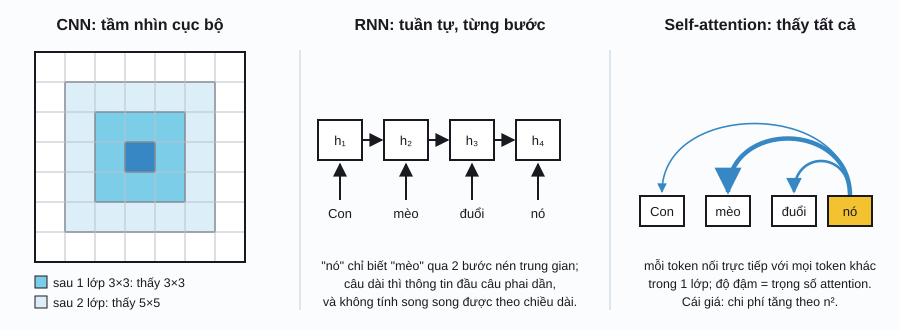
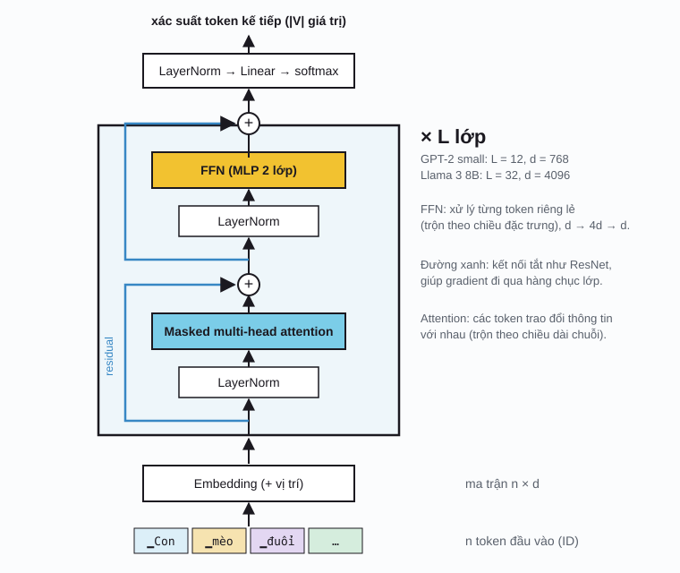

Transformer & genAI / Phần 1
Transformer
Transformer là kiến trúc đứng sau gần như mọi mô hình AI lớn hiện nay: GPT, Llama, Gemini, Claude, các mô hình sinh ảnh và mô hình thị giác. Ý tưởng cốt lõi chỉ có một: cho mỗi token tự quyết định nên lấy thông tin từ những token nào khác, bằng cơ chế attention.
Từ CNN đến Transformer
Bạn đã biết CNN: mỗi neuron chỉ nhìn một vùng nhỏ (ví dụ 3×3), và phải chồng nhiều lớp thì trường tiếp nhận (receptive field) mới đủ rộng để thấy cả bức ảnh. Giả định "điểm gần nhau thì liên quan nhau" (locality bias) rất hợp với ảnh, nhưng với ngôn ngữ thì không: trong câu "Con mèo đuổi con chuột vì nó đói", từ "nó" cần nối với "mèo" ở cách đó 5 từ.
Trước 2017, dữ liệu chuỗi thường được xử lý bằng RNN/LSTM: đọc lần lượt từng token và nén mọi thứ đã đọc vào một vector trạng thái. Cách này chậm (không song song được theo chiều dài chuỗi) và hay "quên" phần đầu của câu dài. Transformer bỏ hẳn tính tuần tự: trong một lớp, mỗi token có thể nhìn trực tiếp mọi token khác.

| Tiêu chí | CNN | RNN / LSTM | Transformer |
|---|---|---|---|
| Phép toán cốt lõi | Tích chập với kernel trượt | Cập nhật trạng thái \(h_t = f(h_{t-1}, x_t)\) | Attention: trộn có trọng số mọi token |
| Tầm nhìn sau 1 lớp | Cục bộ (k×k) | Toàn bộ quá khứ, nhưng nén qua \(h_t\) | Toàn cục |
| Song song hóa khi huấn luyện | Cao | Thấp (phải chạy tuần tự) | Cao |
| Chi phí theo độ dài n | \(O(n)\) | \(O(n)\) | \(O(n^2)\) |
| Giả định sẵn inductive bias | Mạnh: cục bộ, bất biến dịch chuyển | Vừa: thứ tự thời gian | Yếu: phải học từ dữ liệu |
| Khi nào mạnh nhất | Ảnh, ít dữ liệu | Chuỗi ngắn, thiết bị nhỏ | Dữ liệu và mô hình rất lớn |
Token & embedding
Mạng nơ-ron chỉ làm việc với số. Bước đầu tiên là cắt văn bản thành token: đơn vị nhỏ nằm giữa ký tự và từ. Tách theo từ thì từ vựng quá lớn và gặp từ lạ là bó tay; tách theo ký tự thì chuỗi quá dài. Giải pháp phổ biến là Byte-Pair Encoding (BPE): bắt đầu từ ký tự, lặp lại việc gộp cặp token xuất hiện nhiều nhất thành một token mới.
Mỗi token có một số nguyên (ID). ID được tra trong ma trận embedding \(E\) để lấy một vector \(d\) chiều. Ma trận này là tham số học được, giống trọng số của một lớp fully connected nhận vector one-hot.
E ∈ ℝ|V|×d: ma trận embedding; |V|: kích thước từ vựng; n: số token; d: số chiều mô hình (d_model).
Tokenizer BPE thu nhỏ
Chỉnh số phép gộp, gõ câu bất kỳTokenizer trong demo trên chỉ học từ vài trăm từ. Minh họa dưới đây dùng đúng bảng từ vựng thật của ba thế hệ GPT, để thấy kích thước từ vựng ảnh hưởng đến độ dài chuỗi ra sao, nhất là với tiếng Việt.
Tokenizer thật của GPT
So sánh 3 thế hệ tokenizerDịch vụ ngoài: jsDelivr CDN (thư viện gpt-tokenizer)Self-attention
Hãy nghĩ attention như một phép tra từ điển mềm. Mỗi token phát ra ba vector, đều là phép chiếu tuyến tính của embedding \(x\):
- Query \(q = xW_Q\): "tôi đang tìm thông tin gì?"
- Key \(k = xW_K\): "tôi chứa loại thông tin gì?" (nhãn để được tìm thấy)
- Value \(v = xW_V\): "nếu được chọn, tôi đưa ra nội dung gì?"
Độ hợp giữa query của token \(i\) và key của token \(j\) là tích vô hướng \(q_i \cdot k_j\). Softmax biến các điểm số này thành trọng số dương có tổng bằng 1, rồi đầu ra là trung bình có trọng số của các value. Viết cho cả chuỗi cùng lúc bằng ma trận:
QKᵀ ∈ ℝn×n: điểm số của mọi cặp token; softmax lấy theo từng hàng; dk: số chiều của q và k. Chia cho \(\sqrt{d_k}\) vì tích vô hướng của hai vector ngẫu nhiên có phương sai tăng theo \(d_k\); không chia thì softmax bão hòa và gradient gần bằng 0.
Attention trên mặt phẳng
Kéo query hoặc các key; chỉnh nhiệt độNhững điều có thể kiểm tra trên demo:
- Key nằm cùng hướng với query được trọng số cao; key nằm phía bên kia đường nét đứt (\(q\cdot k < 0\)) gần như bị bỏ qua.
- Kéo query dài ra (tăng độ lớn) có tác dụng giống giảm nhiệt độ: attention "sắc" hơn.
- Đầu ra luôn là tổ hợp lồi của các value: nó không tạo ra thông tin mới, chỉ định tuyến thông tin giữa các vị trí. Phần "tính toán" nằm ở lớp FFN phía sau.
So với CNN: kernel tích chập là trọng số cố định sau huấn luyện và chỉ phụ thuộc vị trí tương đối. Trọng số attention được tính động từ chính nội dung đầu vào, nên mỗi câu có một "kernel" riêng.
Multi-head & mask nhân quả
Một token thường cần nhiều loại thông tin cùng lúc: từ đứng trước nó, chủ ngữ của câu, danh từ mà đại từ thay thế... Thay vì một attention lớn, multi-head attention chạy \(h\) attention nhỏ song song, mỗi head có \(W_Q, W_K, W_V\) riêng với \(d_k = d/h\), rồi nối kết quả lại. Tương tự việc một lớp CNN có nhiều kênh, mỗi kênh học một loại đặc trưng.
Ví dụ GPT-2 small: \(d = 768\), \(h = 12\), mỗi head \(d_k = 64\). Tổng chi phí tính toán gần bằng một head lớn.
Với mô hình sinh văn bản (decoder), token thứ \(i\) không được nhìn các token sau nó, vì lúc sinh thật chúng chưa tồn tại. Mask nhân quả (causal mask) cộng \(-\infty\) vào các ô phía trên đường chéo của \(QK^\top\) trước softmax:
Nhiều head, một câu
Chọn head, bấm vào một hàng, bật mask nhân quảMã hóa vị trí
Có một điều lạ: nếu xáo trộn thứ tự các token đầu vào, attention chỉ xáo trộn đầu ra theo đúng cách đó (hoán vị đẳng biến, permutation equivariant). Nói cách khác, attention tự nó coi câu là một tập hợp token, không biết "mèo đuổi chuột" khác "chuột đuổi mèo". Thông tin vị trí phải được đưa vào thêm.
Transformer gốc cộng vào mỗi embedding một vector vị trí cố định gồm các hàm sin, cos với tần số giảm dần theo chiều:
Mã hóa vị trí hình sin
Chỉnh số chiều d, chọn một vị trí| Cách mã hóa | Ý tưởng | Dùng ở |
|---|---|---|
| Hình sin cố định | Cộng vector sin/cos vào embedding | Transformer gốc (2017) |
| Học được learned absolute | Mỗi vị trí 0…nmax có một vector tham số | BERT, GPT-2, ViT |
| RoPE rotary position embedding | Xoay q và k một góc tỉ lệ với vị trí; tích \(q_i\cdot k_j\) chỉ còn phụ thuộc \(i-j\) | Llama, Qwen, Mistral, phần lớn LLM hiện nay |
| ALiBi | Trừ vào điểm attention một lượng tỉ lệ với khoảng cách | BLOOM, MPT |
Khối Transformer
Một mô hình Transformer là \(L\) khối giống hệt nhau xếp chồng. Mỗi khối có hai lớp con, mỗi lớp con được bọc bởi LayerNorm và kết nối tắt (residual connection), đúng như trong ResNet mà bạn đã biết:
W₁ ∈ ℝd×4d, W₂ ∈ ℝ4d×d; σ: ReLU (bản gốc) hoặc GELU (GPT-2). Llama dùng biến thể SwiGLU với ba ma trận và lớp ẩn khoảng \(\tfrac{8}{3}d\), tổng số tham số tương đương. Đây là dạng pre-norm (LN đặt trước), dùng trong GPT-2 trở về sau vì ổn định hơn dạng post-norm của bài báo gốc.

Chia việc rõ ràng. Attention trộn thông tin giữa các token; FFN biến đổi từng token riêng lẻ. Có thể xem chuỗi vector đi qua mô hình như một "dòng chảy residual" (residual stream): mỗi lớp đọc từ dòng chảy này và cộng thêm một chút thông tin vào.
Đếm tham số. Mỗi khối có \(4d^2\) tham số cho attention (\(W_Q, W_K, W_V, W_O\)) và \(8d^2\) cho FFN, tổng khoảng \(12d^2\). Với GPT-2 small (\(L=12, d=768\)): \(12 \times 12 \times 768^2 \approx 85\) triệu, cộng embedding \(50257 \times 768 \approx 39\) triệu, ra đúng con số 124 triệu tham số được công bố.
Đầu ra. Vector cuối của mỗi vị trí được nhân với một ma trận \(d \times |V|\) rồi qua softmax, cho phân phối xác suất của token tiếp theo. Phần 2 sẽ nói cách lấy mẫu từ phân phối này.
Ba dạng Transformer
| Dạng | Attention | Huấn luyện để | Ví dụ | Hợp với |
|---|---|---|---|---|
| Encoder-only | Hai chiều (không mask) | Đoán token bị che masked language modeling | BERT, RoBERTa, ViT | Phân loại, trích xuất, embedding cho tìm kiếm |
| Decoder-only | Nhân quả | Đoán token tiếp theo | GPT, Llama, Claude, Gemini | Sinh văn bản, trò chuyện, gần như mọi việc khi đủ lớn |
| Encoder–decoder | Encoder hai chiều; decoder nhân quả + cross-attention sang encoder | Biến chuỗi này thành chuỗi khác | Transformer gốc, T5, Whisper | Dịch máy, tóm tắt, nhận dạng giọng nói |
Bảng thuật ngữ
| Thuật ngữ | Ký hiệu | Kích thước | Ý nghĩa |
|---|---|---|---|
| Token | — | — | Mảnh văn bản (hoặc mảnh ảnh, âm thanh) mà mô hình xử lý như một đơn vị. |
| Từ vựngvocabulary | \(V\) | 30k – 260k | Tập mọi token mà tokenizer biết. |
| Embedding | \(E\) | \(|V|\times d\) | Bảng tra ID → vector, học được. |
| Ngữ cảnhcontext length | \(n\) | 2k – 1M+ | Số token tối đa mô hình xử lý cùng lúc. |
| Query, Key, Value | \(Q, K, V\) | \(n\times d_k\) | Câu hỏi, nhãn, nội dung của mỗi token trong attention. |
| Ma trận attention | \(A\) | \(n\times n\) | \(\mathrm{softmax}(QK^\top/\sqrt{d_k})\); mỗi hàng có tổng bằng 1. |
| Head | \(h\) | 8 – 128 | Một attention con với phép chiếu riêng. |
| Mask nhân quảcausal mask | \(M\) | \(n\times n\) | Chặn token nhìn về tương lai. |
| FFN / MLP | — | \(d\to 4d\to d\) | Mạng truyền thẳng áp dụng cho từng token; chứa phần lớn tham số. |
| Residual stream | \(x\) | \(n\times d\) | Chuỗi vector đi xuyên các khối, mỗi khối cộng thêm vào. |
| Logit | \(z\) | \(|V|\) | Điểm số chưa chuẩn hóa cho từng token kế tiếp, trước softmax. |
Lịch sử
- 1997
LSTM
Hochreiter và Schmidhuber đề xuất LSTM, giải quyết một phần vấn đề gradient biến mất trong RNN. LSTM thống trị xử lý chuỗi gần 20 năm.
- 2013
word2vec
Mikolov và cộng sự cho thấy vector từ học được có cấu trúc ngữ nghĩa: "vua" − "đàn ông" + "phụ nữ" ≈ "nữ hoàng". Embedding trở thành điểm khởi đầu chuẩn.
- 2014
Attention cho dịch máy
Bahdanau, Cho và Bengio thêm attention vào mô hình encoder–decoder RNN: khi dịch mỗi từ, decoder "nhìn lại" các từ nguồn liên quan thay vì chỉ dựa vào một vector nén.
- 2016
BPE cho mạng nơ-ron
Sennrich, Haddow và Birch đưa BPE (vốn là thuật toán nén dữ liệu từ 1994) vào dịch máy để xử lý từ hiếm.
- 2017
"Attention Is All You Need"
Vaswani và cộng sự (Google) bỏ hẳn RNN, chỉ dùng attention. Mô hình vượt kết quả dịch máy tốt nhất lúc đó với thời gian huấn luyện ngắn hơn nhiều.
- 2018
BERT và GPT
Google công bố BERT (encoder-only), OpenAI công bố GPT (decoder-only). Mô hình "tiền huấn luyện rồi tinh chỉnh" (pretrain, then fine-tune) trở thành chuẩn.
- 2020
GPT-3 và ViT
GPT-3 (175 tỉ tham số) cho thấy mô hình đủ lớn có thể làm việc mới chỉ từ vài ví dụ trong prompt. Vision Transformer chứng minh Transformer cũng cạnh tranh được với CNN trên ảnh.
- 2021–22
RoPE và FlashAttention
RoPE (Su và cộng sự) trở thành cách mã hóa vị trí phổ biến. FlashAttention (Dao và cộng sự) tính attention chính xác nhưng tiết kiệm bộ nhớ GPU, mở đường cho ngữ cảnh dài.
Tài liệu tham khảo
- A. Vaswani et al., "Attention Is All You Need", NeurIPS 2017. arXiv:1706.03762.
- J. Alammar, The Illustrated Transformer (bài giải thích bằng hình nổi tiếng).
- A. Karpathy, nanoGPT và bài giảng "Let's build GPT" (code GPT tối giản, dễ đọc).
- R. Sennrich, B. Haddow, A. Birch, "Neural Machine Translation of Rare Words with Subword Units", ACL 2016. arXiv:1508.07909.
- J. Su et al., "RoFormer: Enhanced Transformer with Rotary Position Embedding", 2021. arXiv:2104.09864.
- C. Olsson et al., "In-context Learning and Induction Heads", Anthropic, 2022. transformer-circuits.pub.